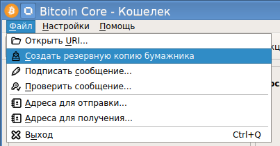
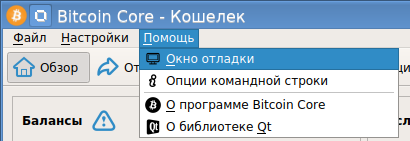
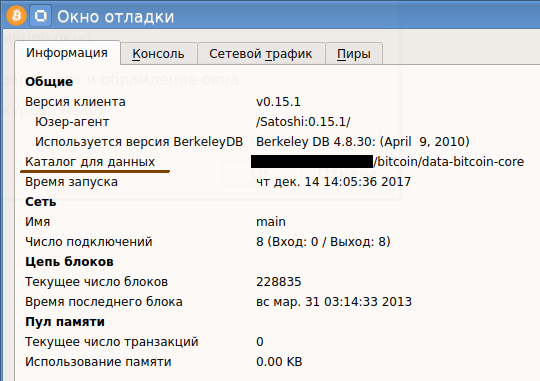

В официальном клиенте Bitcoin Core (запускаемый файл бинарника bitcoin-qt) есть возможность делать резервные копии кошелька. Для этого в его меню есть пункт "Создать резервную копию бумажника":

А вот пункта "Восстановить кошелек из резервной копии" нет. Как же можно восстановиться из резервной копии бумажника?
Секрет прост: надо подменить файл бумажника, который при старте открывает клиент bitcoin-qt. Чтобы его подменить, нужно точно знать, где лежат данные биткоин-клиента. Сделать это можно в пункте меню "Помощь" - "Окно отладки":

Откроется окно отладки, и на вкладке "Информация" будет показан путь к каталогу с данными биткоина:

В этом каталоге находится файл wallet.dat, который использует клиент bitcoin-qt. Для его подмены надо выключить клиента (в момент выключения обязательно нужно дождаться конца синхронизации, об этом будет висеть предупреждение), и только после корректного выключения можно подменить файл кошелька.
Внимание! Официальный клиент биткоина сделан так, что он хранит в одном и том же каталоге и файл кошелька, и файлы блокчейна, и файлы конфигурации, логи и прочие файлы, необходимые для его работы. Трогать (подменять) можно только файл кошелька. Помните об этом, иначе вы нарушите работу клиента.
После подмены файла кошелька можно заново запустить клиент. Если кошелек был зашифрован, то будет запрошен пароль. После чего кошелек будет открыт, и в строке баланса отобразится сумма, которая "хранится" в данном кошельке.
Почему слово "хранится" взято в кавычках? Потому что на самом деле в кошельке никакие суммы не хранятся. В кошельке хранятся только bitcoin-адреса, на которые осуществлялись переводы. И еще закрытые ключи для этих адресов. Сумма, хранимая на биткоин-адресах, вычисляется динамически на основе данных из блокчейна! Это всегда нужно знать и понимать, чтобы правильно пользоваться кошельком и сетью Bitcoin.